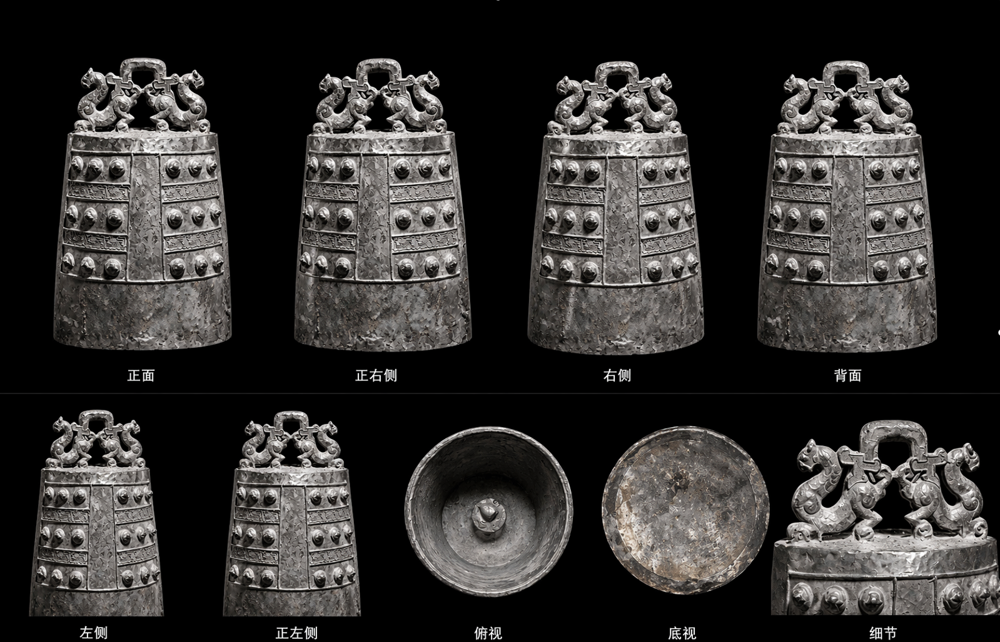
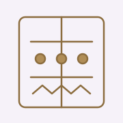
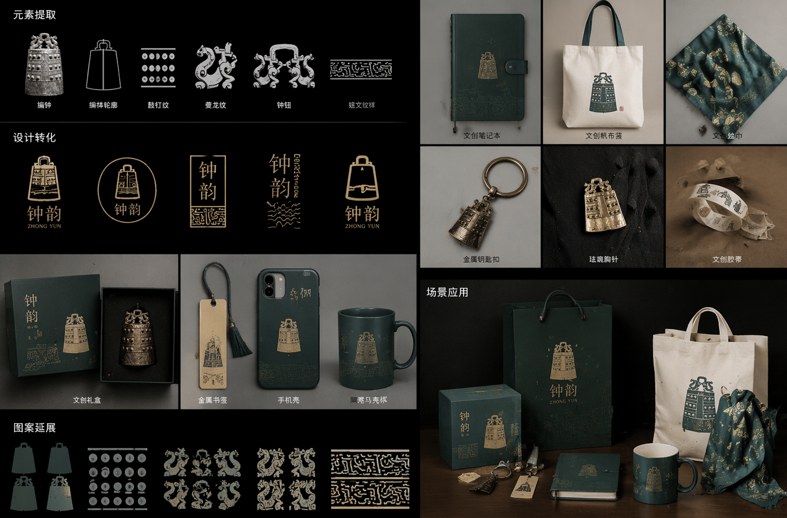
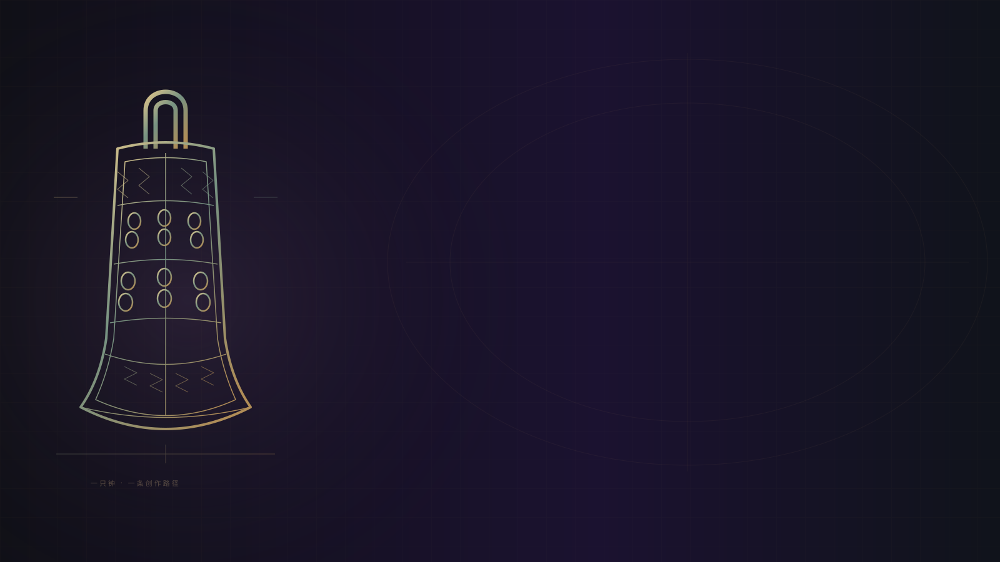

01
选一只编钟参考
挑一只真实编钟（单钟），多角度收集参考图。
流程示意 · 据原课程整理从文物形制走向交互体验
是看清一只钟的细节，还是敲出一段旋律？先决定体验，再决定模型、声音和反馈如何协同。
先认识这件创作的起点 ↓01 / 认识编钟
这条线从「一个能拿在手里的东西」开始。学员用「文/图生 3D」把一只青铜编钟（单钟，而非整架）数字复刻成一个真正的 3D 模型（不预设建模基础），渲染转盘，再围绕它设计一整套文创周边——摆件、盲盒、冰箱贴、 书签……并打印一件实体。导出的模型交给后续交互课——让编钟随本组音乐旋转、共振。
这节课聚焦一只编钟。观察钟钮、枚、鼓部、纹饰、铭文与青铜锈色；AI 生成结果需要回到参考图中逐项核对。试玩中的双层十一钟用于课堂交互展示，文物复刻则以你选定的真实单钟为依据。
查看原课的单钟照片参考 ↗
02 / 在线试玩
原站提供“编钟可交互”和“古韵青铜”两个案例。主案例默认展示双层十一钟三维模型，每只钟对应一个独立音：点钟、点音键，观察发声与视觉反馈的关系，再对照下方的制作步骤。
直接操作 · 点击发声
点击默认模型的十一只钟体或下方对应音键，试着奏出一段短句。十一只钟分别对应 G3 至 G5 的十一个五声音阶音；数字键 1—9、0 和减号也可演奏，并支持自动演奏、停止和静音。
打开完整试玩 ↗默认载入本课的双层十一钟模型，按三维命中位置识别钟体；转动视角后，同一只钟仍发同一个音，木架和空白不发声。声音由浏览器合成。也可导入自己的单文件 GLB，更换后使用十一个横向演奏区。
03 / 文创流程
挑一只真实编钟（单钟），多角度收集参考图。
流程示意 · 据原课程整理
02钮·枚·鼓部·纹饰·铭文——决定文创取舍。
流程示意 · 据原课程整理正面参考喂给混元3D/Tripo，生成可旋转网格。
流程示意 · 据原课程整理统一视觉，做摆件/盲盒/冰箱贴/书签等 ≥4 件。
流程示意 · 据原课程整理导出 STL 切片打印一件；GLB 交给交互课。
流程示意 · 据原课程整理文创成果
从钟体轮廓、鼓钉纹、龙纹与铭文纹样，延展出统一的文创系列。

课堂收获
04 / 课堂实作
保留原课约三小时的日程。打印可以排队并在课后取件；没有打印机时，提交可打印文件与渲染图。
讲座＋现场演示
09:00—09:25 · 约 25 分钟
展示曾侯乙编钟全套，讲「一钟双音」与礼乐意义。「这是一整架 65 件；今天我们只复刻其中一只。」
抛 3 个真实博物馆文创案例（故宫胶带 · 三星堆盲盒 · 国博雪糕），问：「它们为什么让人想买？」
拿一张单钟正面照上传混元3D，单图生成，转一圈让学生看 AI 如何「脑补」背面。
复刻一只 3D 编钟 → 一整套文创 → 打印一件，并把 .glb 交给后续交互课。

复刻前先认识形制。不碰 AI：挑一只真实编钟（单钟），记录关键特征（钮 · 枚 · 鼓部 · 纹饰 · 铭文 · 青铜锈色），收集多角度参考图；写一句「文创定位」（给谁 · 什么场景 · 什么调性）。
制作一张干净的古代中国青铜编钟单钟参考图（仅一只钟，不要整架钟）：比例准确，包含正视图和侧视图，呈现青铜绿锈色，清楚显示凸起的枚和铭文。采用中性摄影棚背景、均匀照明和照片式参考图风格。
教学点 · 文创不是把文物贴在杯子上——先读懂形制与气质，才知道留什么、舍什么。
体验「图生 3D」：参考图 → 可旋转的 3D 编钟网格。把练习 1 的正面参考上传到混元3D / Tripo，先单图生成，背面穿帮再补三视图。
上传：你自己的单只编钟正面参考图。 模式：单图生成三维模型。对称：开启。生成贴图：开启。 面数：中等。生成后查看转盘预览。 如果钟体弧面或口沿不准确，切换到多视图模式，上传正面、侧面和背面参考图。
教学点 · 图生 3D 是「猜立体」：参考越多，AI 猜得越准。三视图 + 比例参照 > 单图。
学会看 AI 网格的毛病、最小化处理，导出干净 .glb，做一个 360° 转盘渲染。不必会建模——会「看出哪不对、并描述出来」即可。
| 网格糊 / 多余面 | 使用工具内置的“网格重构 / 简化 / 自动重拓扑”功能。 |
| 比例不对 | 重新缩放，或换用更清晰的视图重新生成。 |
| 悬空 / 站不稳 | 在钟体下方增加一个小圆底座或支架。 |
| 颜色发灰 | 重新烘焙青铜贴图，或在导出后调整颜色。 |
教学点 · 这个 model.glb 就是后续交互课的主角——到时候让编钟随你的音乐旋转、共振。别丢。
把 3D 编钟变成一整套文创周边。选至少 4 种载体，统一一套视觉系统（配色 · 纹样 · 系列标识），做贴图样机。
以青铜编钟为主题，设计一套协调统一的文创产品：木质底座上的微缩编钟桌面摆件；盲盒及包装盒（顶部标识为“编钟 · 礼乐”）；冰箱贴；书签。整套产品采用同一视觉系统：青铜绿色调，以及来自编钟枚与铭文的纹样。采用摄影棚产品照片、柔和阴影和博物馆商店电商视觉风格。
| 桌面摆件 | 放在木质或亚克力底座上的微缩编钟。 |
| 盲盒 | 编钟系列造型玩偶与包装盒。 |
| 冰箱贴 / 徽章 | 编钟轮廓结合青铜纹样。 |
| 书签 / 胶带 | 将编钟纹饰转化为平面图案。 |
| 香插 / 茶宠 | 编钟造型的实用桌面器物。 |
| 帆布袋 / 明信片 | 可重复排列的编钟纹样。 |
教学点 · 文创的关键是「成套的系统」：统一的视觉语言，让单品变成一个系列。
导出可打印的 .stl，切片并（轮流）打印一件（如编钟摆件）；同时把 .glb 正式交接给后续交互课。
| 方案一 · 有打印机 | 导出 STL → 切片（加底座 / 支撑，填充 10–20%）→ 轮流打印一件编钟摆件，课后取 |
| 方案二 · 无打印机 | 导出 STL + 高质量渲染图，组成「可打印包」；附在线打印服务报价截图 |
教学点 · 你完整走了一遍博物馆文创的生产线：读形 → 复刻 3D → 整套周边 → 实体。把 model.glb 交给交互组——编钟即将随音乐起舞（后续交互课）。
05 / 交互制作
从空舞台开始，在同一个对话里逐项增加能力。每贴入一条提示词，就预览、操作并核对一次。以下按原站七步指南完整整理，模型输入与界面文案已适配本次中文课堂。
默认载入本课的双层十一钟三维模型，支持旋转、缩放与自动旋转；加载失败时显示可演奏示意钟架。米纸与青铜色作为舞台基调，AR 作为条件支持的可选功能。
制作一个完整的 HTML 页面，作为中国古代青铜编钟的交互三维查看器，无需构建步骤。使用 Google 的 model-viewer 网页组件，并将组件文件与网页一同托管。默认载入我提供的双层十一钟 model.glb；如果加载失败，显示可演奏的示意钟架，并保留导入自己模型的入口。三维模型支持拖动旋转、缩放和自动旋转开关；配置柔和阴影和中性环境光。采用温暖米纸色（#FAF6F0）与青铜色（#B08D57），留出安静的空间，所有界面文字均为中文。AR 仅作为可选功能：只在设备、浏览器和安全页面环境支持时提供入口，不支持时保留完整的网页演奏体验。
保留默认编钟，并允许随时导入自己的单文件 GLB；导入失败时说明原因，仍能继续课堂演奏。
在同一个文件中提高加载可靠性。默认模型加载失败时，不要留下空白或破损舞台；保留可演奏示意钟架，并显示中文提示。允许将资源已打包的单文件 .glb 拖到舞台，也能点击“选择模型”或“更换模型”按钮载入；文件不超过 100MB。不接受依赖外部资源或额外解码器的模型，遇到损坏或不支持的文件时解释原因。导入文件仅在当前浏览器读取，不自动上传；保留返回默认编钟的入口。
点击钟体响起一声有金属质感、带长尾的合成钟声；点击木架、空白或拖动旋转时不发声。
现在让钟体发声。点击默认模型中有效的钟体区域或示意钟架的钟体时，使用 Web Audio API 合成钟声；点击木架、空白或拖动旋转时不要发声。不要只用一个正弦波发出电子“滴”声；叠加约六个非整数倍频率的分音，加入轻微失谐、快速起音和约三秒的长指数衰减，表现敲击青铜后的金属余韵。声音仅在用户主动点击后启动；明确说明这是课堂合成声音，并非文物实录。
默认模型的十一只钟分别绑定十一个独立音，旋转视角后仍保持对应。中文音级以 C 为宫：G 徵、A 羽、C 宫、D 商、E 角。
把默认双层模型的十一只钟分别绑定一个独立音。按由低到高使用 G3、A3、C4、D4、E4、G4、A4、C5、D5、E5、G5；为每只钟记录三维钟体区域，使用点击的三维命中位置识别钟体，不能只按屏幕横坐标切分默认模型。旋转和缩放后，同一只钟仍发同一个音；木架和空白不发声。导入其他模型时，不沿用默认钟架的专属坐标，改用明确标示的十一个横向演奏区。若显示中文音级，以 C 为宫：G 为徵、A 为羽、C 为宫、D 为商、E 为角。每次发声时，短暂显示对应音名。
舞台下方有十一个音键，点哪个响哪个并高亮；数字键 1—9、0 和减号也可演奏，与默认模型的十一只钟共用同一套音。
在舞台下方增加十一个可点击的音键，每个音对应一个键，标出音名与快捷键：1—9、0、减号。点击音键或按对应键盘按键时，播放该音并短暂高亮。点击默认模型钟体、示意钟架、音键以及键盘演奏，必须共用完全相同的十一音数组。默认模型每个音键对应一只固定的钟。输入框或按钮正在接收输入时，避免误触快捷键。所有控件标签使用中文。
一个「奏一段」按钮顺次奏完全部音；每次发声，点击处冒出一圈涟漪、对应键亮一下。
增加“奏一段”按钮，按从低到高的顺序依次播放全部十一个音，每个音之间留出短暂间隔，并提供“停止”按钮。为每次发声增加视觉反馈：从点击位置发出柔和扩散的涟漪，并让对应音键短暂高亮；保留已有的音名提示。自动演奏同样使用十一音数组，不能遗漏第十一只钟。
增加自动旋转开关与复位视角按钮；整页采用米纸与青铜配色、纯中文标签；发布包含默认模型的网页，保留观众导入自己的模型。
完成收尾。增加自动旋转开关，以及将相机重新居中、恢复正面视角的“复位视角”按钮。整页保持米纸与青铜配色，所有标签均为中文。输出可直接托管的完整网页与资源说明，将默认 model.glb、钟体映射数据和 model-viewer 组件一起发布，使用相对资源路径。观众导入的模型只在当前浏览器读取，不自动上传到网站；可以返回默认编钟。缺少模型或加载失败时仍保留可演奏示意钟架。发布后核对十一只钟、十一个音键、停止、静音、更换模型和手机布局。
06 / 整理交付
单钟 model.glb、三个角度截图，以及 10—15 秒的 360° 转盘视频。标明参考来源与修正过的形制细节。
至少四件样机、系列合影、系列名与一句宣传语。附 model.stl 和实体打印件；没有打印机时附渲染图与可打印包。
可运行网页、短演奏录屏、提示词迭代记录与使用说明。核对音键、停止、模型加载和手机布局，让观众打开后知道如何体验。
文创系列的视觉语言可以延续到编钟网页，再与音乐可视化作品结合；每一轮都用实际运行的结果来判断下一步。
内容与案例据原课程整理；页面沿用音乐可视化中文版的中传标识、配色与排版。两种试玩保留原案例的交互思路与合成声音机制。
原编钟与文创课程 ↗原“编钟可交互”案例 ↗原“古韵青铜”案例 ↗原七步制作指南 ↗